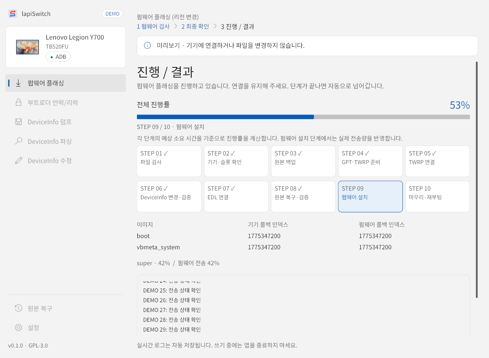
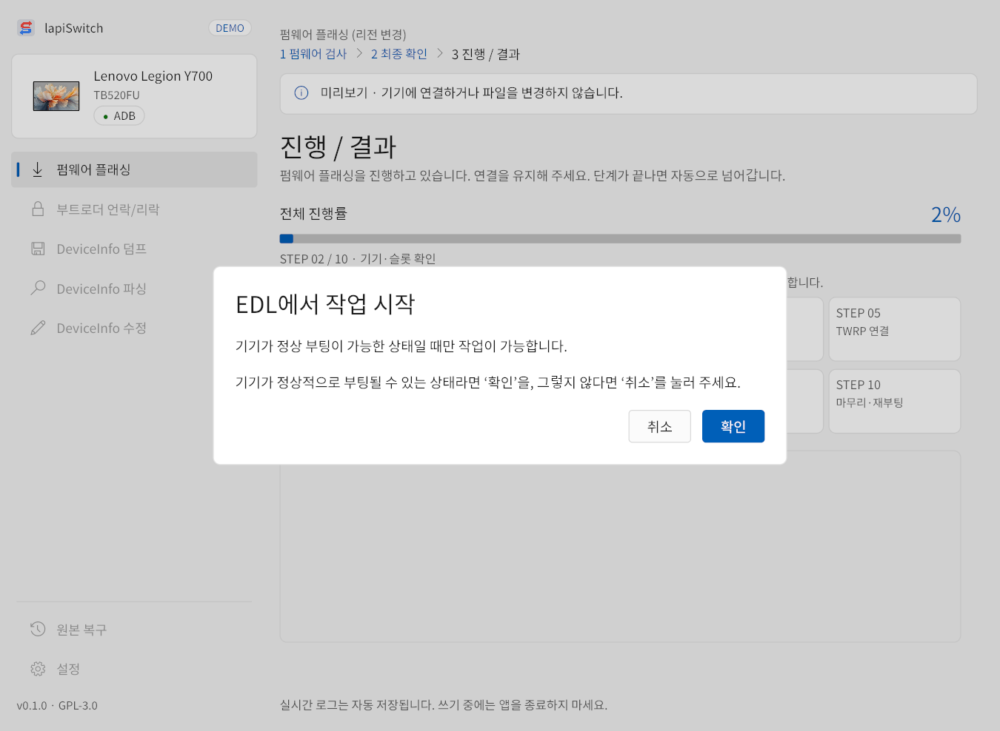
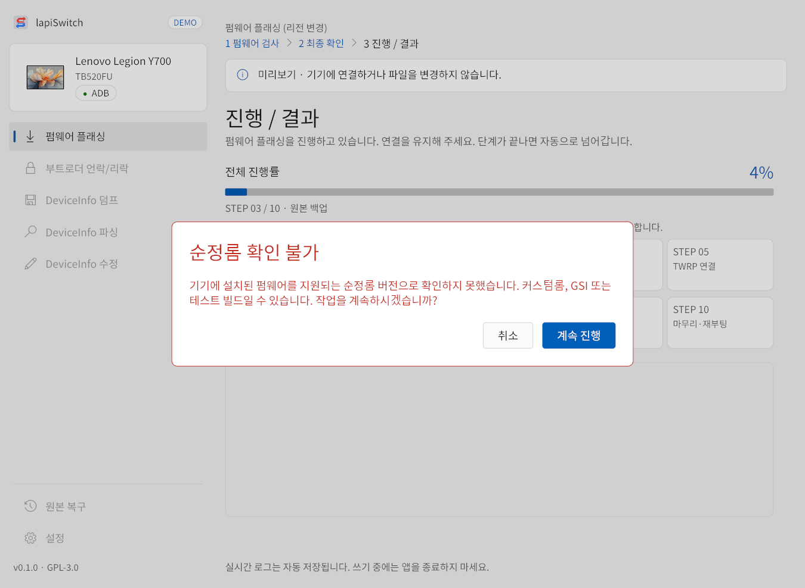
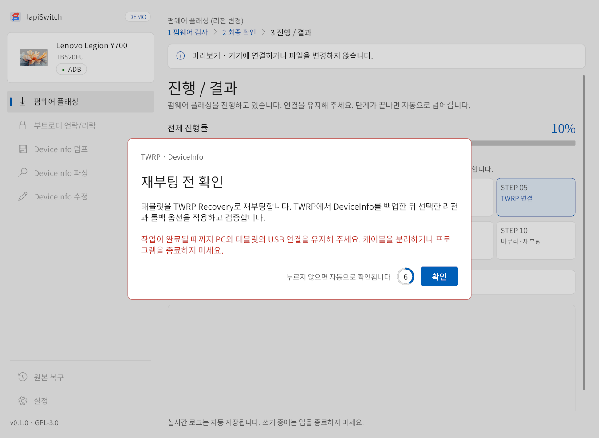
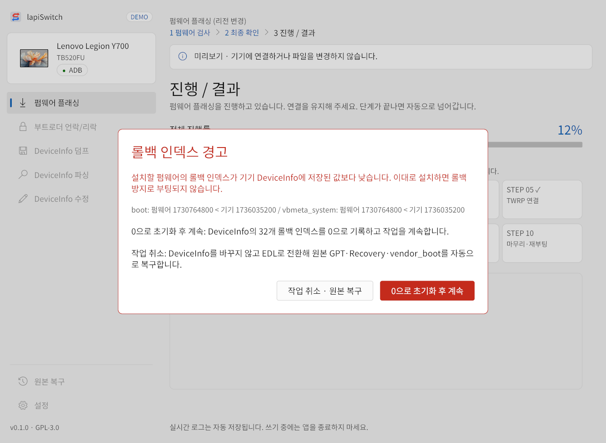
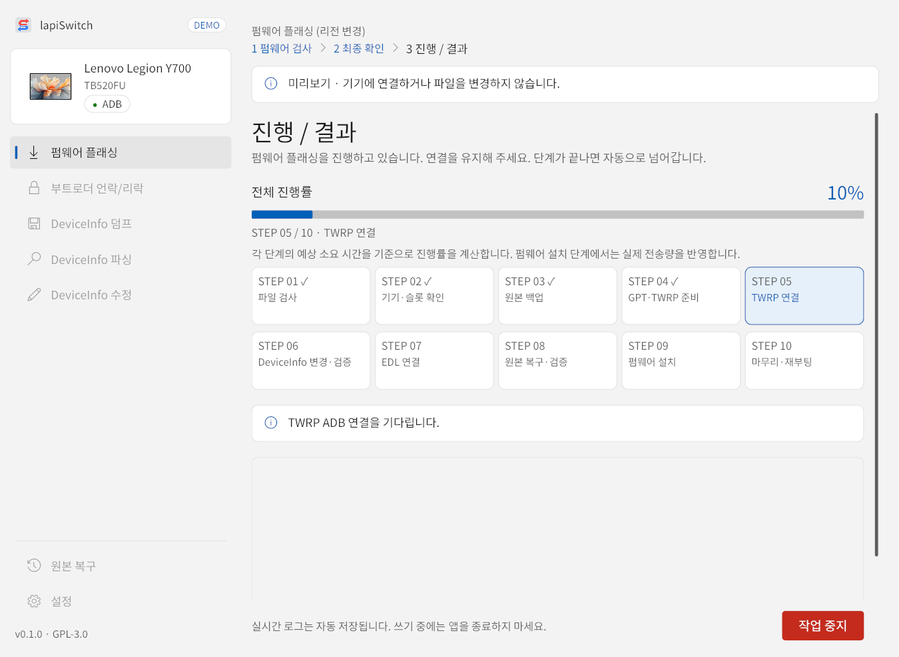
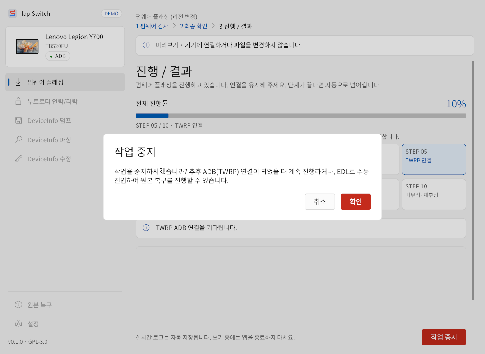
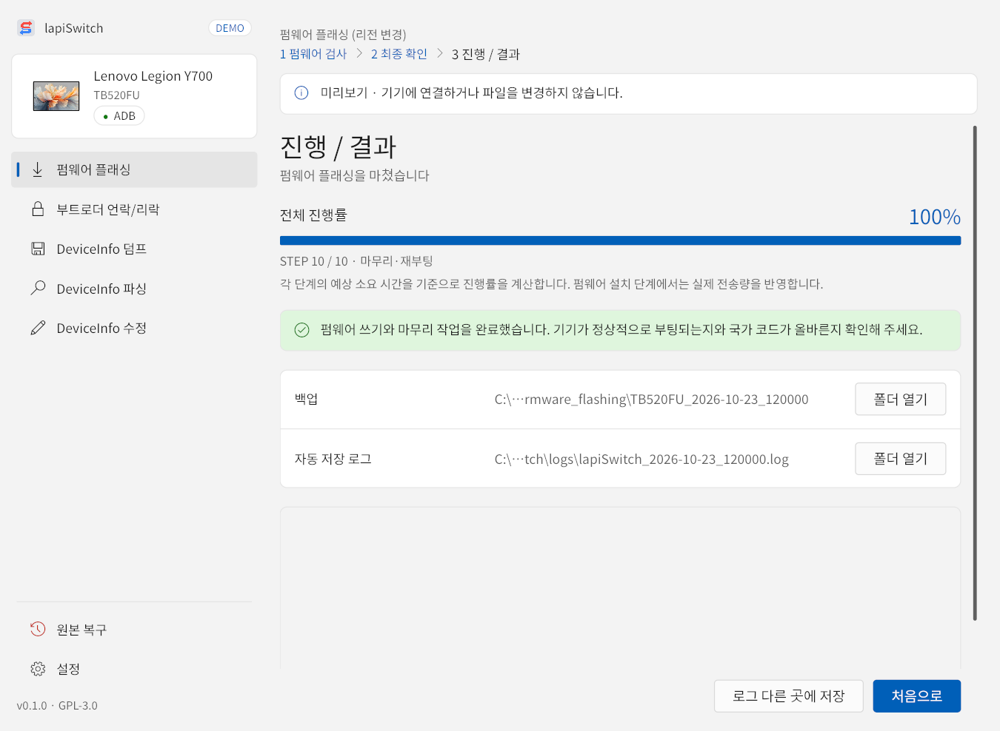

1진행 화면
작업을 시작하면 단계가 자동으로 진행됩니다. 펌웨어 플래싱과 DeviceInfo 수정은 10단계, 부트로더 언락/리락과 DeviceInfo 덤프는 펌웨어 설치를 뺀 9단계입니다. 진행 중에는 왼쪽 메뉴가 잠깁니다.

1 2 3 4 5 6 7 8- 1전체 진행률 — 단계별 예상 소요 시간을 기준으로 계산하며, 펌웨어 설치 단계는 실제 전송량을 반영합니다.
- 2현재 단계 번호와 이름.
- 3단계 카드 — 끝난 단계에는 ✓ 표시가 붙습니다.
- 4지금 진행 중인 단계(파란 테두리).
- 5기기와 펌웨어의 롤백 인덱스 비교.
- 6펌웨어 설치 단계의 세부 진행률(파티션 이름과 전송 비율).
- 7실시간 로그 — 자세한 작업 기록. 같은 내용이 로그 파일에도 저장됩니다.
- 8주의 문구. 연결 대기가 30초를 넘기면 이 자리 오른쪽에 작업 중지 버튼이 나타납니다.
단계별 설명
펌웨어(플래싱 시)와 기기별 공식 TWRP 파일을 검사합니다. TWRP는 지정된 릴리즈에서 내려받고, 쓸 때마다 크기와 SHA-256을 확인합니다.
연결 모드, 모델, 활성 슬롯, 설치된 펌웨어 버전 상한을 확인하고 백업을 위해 EDL로 전환합니다. 태블릿이 재부팅됩니다.
원본 GPT·Recovery·vendor_boot·misc 및 고유 파티션을 백업하고, 다시 읽어 크기와 SHA-256을 확인합니다.
TWRP로 부팅할 수 있도록 GPT와 Recovery 구성을 준비합니다.
재부팅 확인 후 태블릿이 TWRP Recovery로 부팅되고, 앱이 TWRP의 ADB 연결을 기다린 뒤 기기를 다시 확인합니다.
DeviceInfo를 두 번 읽어 PC에 백업한 뒤 변경 내용을 적용하고, 4096바이트 전체를 다시 읽어 검증합니다. 덤프는 읽어서 저장만 합니다.
재부팅 확인 후 EDL로 다시 진입합니다. 자동 EDL 재진입은 보통 1분 정도 걸립니다.
STEP 03에서 백업한 원본 GPT·Recovery·vendor_boot를 되돌리고 검증합니다.
펌웨어 플래싱(또는 리전을 바꾼 DeviceInfo 수정)에서만 진행합니다. 공식 펌웨어를 설치하고 사용자 데이터를 초기화합니다. 가장 오래 걸리는 단계입니다.
GPT·국가 코드·활성 슬롯을 확인한 뒤 시스템 부팅을 요청합니다.
EDL 상태에서 시작한 경우
이미 EDL 모드로 연결된 채로 시작하면 아래 확인창이 나옵니다. 이 작업은 기기가 정상 부팅이 가능한 상태일 때만 진행할 수 있습니다. 정상 부팅이 되는 기기라면 확인, 부팅이 안 되는 기기라면 취소를 누르세요.

순정롬으로 확인할 수 없을 때
기기에 설치된 펌웨어를 지원되는 순정롬 버전으로 확인하지 못하면 아래 창이 나옵니다. 커스텀롬·GSI·테스트 빌드일 수 있습니다. 취소하면 기기를 바꾸지 않고 중단하며, 계속 진행을 골라야 작업이 이어집니다. 모델 확인과 통신 오류 검사는 그대로 적용됩니다.

재부팅 전 확인 (STEP 05·07)
TWRP나 EDL로 재부팅하기 전에 빨간 테두리의 재부팅 전 확인 창이 뜹니다. 내용을 읽고 확인을 누르세요. 누르지 않아도 10초 뒤 자동으로 확인됩니다. 태블릿에 TWRP 화면이 나타나도 앱이 자동으로 진행하므로 태블릿에서 따로 조작할 필요는 없습니다.

롤백 인덱스 경고
최종 확인에서 롤백 인덱스를 유지로 골랐는데 설치할 펌웨어의 롤백 인덱스가 기기 DeviceInfo에 저장된 값보다 낮으면, TWRP 단계에서 아래 경고가 나옵니다. 그대로 설치하면 롤백 방지로 부팅되지 않습니다.

- 0으로 초기화 후 계속 — DeviceInfo의 32개 롤백 인덱스를 0으로 기록하고 작업을 계속합니다.
- 작업 취소 · 원본 복구 — DeviceInfo를 바꾸지 않고 EDL로 전환해 원본 GPT·Recovery·vendor_boot를 자동으로 복구합니다.
연결이 오래 걸릴 때: 작업 중지
TWRP나 EDL 연결을 30초 넘게 기다리면 오른쪽 아래에 작업 중지 버튼이 나타납니다. 먼저 케이블과 태블릿 화면을 확인하고, 그래도 연결되지 않을 때만 사용하세요. 누르면 확인창이 나오고, 확인하면 대기를 멈춥니다.
3분(180초) 안에 연결되지 않으면 오류로 중단하며 백업과 작업 기록은 보존됩니다. 연결을 확인한 뒤 이어하기를 선택하거나 원본 복구를 진행하세요.


중지한 뒤에는 두 가지 방법이 있습니다.
2완료와 중단
정상 완료
100%와 완료 안내가 표시되면 끝입니다. 태블릿이 시스템으로 부팅됩니다. 초기화 직후의 첫 부팅은 평소보다 오래 걸릴 수 있으니 기다려 주세요. 부팅이 끝나면 실제로 부팅되는지와 국가 코드가 맞는지 확인하세요.

- 폴더 열기 — 이번 작업의 백업 폴더나 로그가 있는 폴더를 엽니다.
- 로그 다른 곳에 저장 — 이번 작업 로그를 원하는 위치에 복사합니다. 문제를 문의할 때 첨부하세요.
- 처음으로 — 기기 화면으로 돌아갑니다.
작업이 중단된 경우
문제가 생기면 “작업이 중단되었습니다”와 함께 원인, 백업 위치, 로그가 표시됩니다. 원인을 읽고 해결한 뒤 다시 시도하거나, 필요하면 원본 복구를 진행하세요. 백업 폴더는 지우지 마세요.